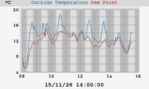
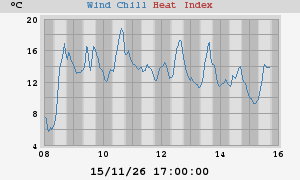
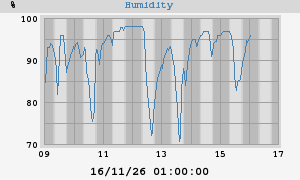
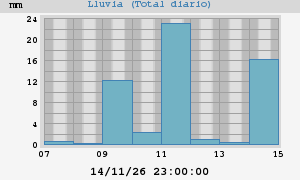
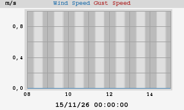
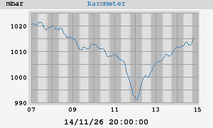
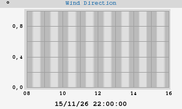
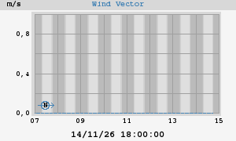

Gráficos y estadísticas semanales








|
Temperatura máxima Temperatura mínima |
14,4°C a las 14:57:04 (lunes) -0,6°C a las 04:25:12 (viernes) |
| Menor sensación térmica | -0,6°C a las 04:25:12 (viernes) |
|
Humedad máxima Humedad mínima |
96% 03:39:14 (lunes) 48% 15:03:26 (lunes) |
|
Punto de rocio máximo Punto de rocio mínimo |
7,6°C 17:50:56 (martes) -1,4°C 04:15:48 (viernes) |
|
Presión máxima Presión mínima |
1026,2 mbar a las 00:12:02 (lunes) 1012,1 mbar a las 05:14:01 (miércoles) |
| Lluvia total | 2,8 mm |
| Máxima tasa de lluvia | 11,4 mm/hr a las 05:50:00 (miércoles) |
| Máxima vel. del viento | 0,0 m/s desde N/A a las 00:00:03 (lunes) |
| Viento medio | 0,0 m/s |
|
Vel. máxima del vector Dir. media del vector |
N/A 90° |
|
Temperatura máxima Temperatura mínima |
21,8°C - 01/11/26 16:27:15 -0,6°C - 27/11/26 04:25:12 |
| Mínima sensación térmica | -0,6°C - 27/11/26 04:25:12 |
|
Humedad máxima Humedad mínima |
98% - 11/11/26 14:00:21 32% - 01/11/26 16:16:31 |
|
Punto de rocio máximo Punto de rocio mínimo |
16,2°C - 09/11/26 16:30:43 -1,9°C - 03/11/26 06:35:06 |
|
Presión máxima Presión mínima |
1026,2 mbar - 23/11/26 00:12:02 991,1 mbar - 12/11/26 01:00:00 |
| Lluvia total | 70,4 mm |
| Máxima tasa de lluvia | 93,0 mm/hr - 14/11/26 12:37:38 |
| Vel. máxima del viento | 0,0 m/s desde N/A - 01/11/26 00:00:04 |
| Vel. media del viento | 0,0 m/s |
|
Vel. media del vector Dir. media del vector |
N/A 90° |







